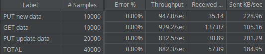
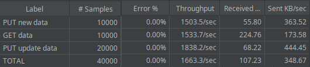

Aleksandar Stojanović
for stream in listener.incoming() {
//Check for termination
let terminate = termntd_clone.lock().unwrap();
if *terminate {
break;
}
let stream = stream.unwrap();
let repo_instance = Arc::clone(&repo);
thread_pool.execute(move || {
handle_connection(stream, repo_instance);
})
}
pub struct Entity{
pub id: i64,
pub description: String,
pub value: f32
}
pub struct HttpRequest{
pub method: HttpMethod,
pub path: String,
pub headers: Vec<String>,
pub body: Option<Entity>
}
struct Worker {
id: usize,
thread: Option<thread::JoinHandle<()>>,
}
impl Worker{
fn new(id: usize, job_listener: Arc<Mutex<mpsc::Receiver<Job>>>) -> Worker{
//First we spin the thread and then assign its handle to worker
let thread = thread::spawn(move || loop {
//All threads will wait for their turn to lock the
// channel and by that receive some job
let message = job_listener.lock().unwrap().recv();
match message {
Ok(job ) => {
println!("Worker {id} got a job; executing.");
job();
},
//Error will occur when job_dispatcher is closed
Err(_) => {
println!("Worker {id} disconnected; shutting down.");
break;
}
}
});
Worker{
id,
thread: Some(thread)
}
}
}
pub struct ThreadPool{
workers: Vec<Worker>,
job_dispatcher: Option<mpsc::Sender<Job>>
}
Inicijalizacija:
impl ThreadPool{
pub fn new(size: usize) -> Self{
assert!(size > 0);
let (job_dispatcher, job_listener) = mpsc::channel();
let job_listener = Arc::new(Mutex::new(job_listener));
let mut workers = Vec::with_capacity(size);
for id in 0..size{
workers.push(Worker::new(id, Arc::clone(&job_listener)));
}
ThreadPool{
workers,
job_dispatcher: Some(job_dispatcher)
}
}
}
Oslobađanje:
impl Drop for ThreadPool{
fn drop(&mut self) {
drop(self.job_dispatcher.take());
for worker in &mut self.workers{
//Waits for currently running jobs in threads to finish
if let Some(thread) = worker.thread.take(){
thread.join().unwrap();
}
}
}
}
connChan := make(chan net.Conn)
wg := sync.WaitGroup{}
Pokretanje niti:
for i := 0; i < poolSize; i++ {
wg.Add(1)
go func(threadNum int) {
defer wg.Done()
for {
select {
case conn, ok := <-connChan:
{
if !ok {
return
}
fmt.Printf("Thread %d handles request\n", threadNum)
handleConnection(conn, repo, mapMux)
}
}
}
}(i)
}
Prosleđivanje konekcija:
go func() {
for {
conn, err := listener.Accept()
if err != nil {
fmt.Println("Error accepting:", err)
continue
}
//Check for termination
shutdownServerFlag.Lock()
if shutdownServerFlag.close {
close(connChan)
shutdownServerFlag.Unlock()
return
} else {
shutdownServerFlag.Unlock()
}
//Dispatch request to thread pool
connChan <- conn
}
}()
Repozitorijum:
pub struct Repo{
entities: HashMap<i64,Arc<RwLock<Entity>>>
}
let repo = Arc::new(RwLock::new(Repo::new()));
Rešenje prvog scenaria (read lock na nivou mape i elementa):
impl Repo{
pub fn get_by_id(&self, id: i64) -> Option<Entity>{
match self.entities.get(&id){
Some(entity_lock) => {
let entity = entity_lock.read().ok()?;
Some((*entity).clone())
},
None => None
}
}
}
{
...
if let Ok(ro_repo) = repo.read(){
match ro_repo.get_by_id(id){
Some(entity) => {
...
}
None =>{
...
}
};
}
...
}
Rešenje drugog scenaria (write lock na nivou mape):
{
...
// Doesnt exist: lock whole map and add
let mut w_repo = repo.write().unwrap();
let new_id = body.id;
let new_ent = Arc::new(RwLock::new(body));
w_repo.entities.insert(new_id, new_ent);
...
}
Rešenje trećeg scenaria (read lock na nivou mape i write lock na nivou elementa):
{
...
if exists {
//just mutate entry without locking whole map
if let Some(ro_repo) = repo.read().ok() {
let entry = ro_repo.entities.get(&body.id).unwrap();
//Locking and changing entity inside repo
if let Some(mut rw_entity) = entry.write().ok() {
*rw_entity = body;
}else{
...
}
} else {
...
}
} else {
...
}
Repozitorijum:
type Repo struct {
Entries map[int64]MapEntry
}
type MapEntry struct {
Mux *sync.RWMutex
Entity Entity
}
func main(){
...
repo := NewRepo()
mapMux := &sync.RWMutex{}
...
}
Rešenje prvog scenaria (read lock na nivou mape i elementa):
{
...
mapMux.RLock()
entry, ok := repo.Entries[id]
entry.Mux.RLock()
jsonBytes, err := json.Marshal(entry.Entity)
entry.Mux.RUnlock()
mapMux.RUnlock()
...
}
Rešenje drugog scenaria (write lock na nivou mape):
{
...
//Entry doesn't exist -> lock whole map
mapMux.Lock()
repo.Entries[request.Body.Id] = *NewMapEntry(*request.Body)
mapMux.Unlock()
...
}
Rešenje trećeg scenaria (read lock na nivou mape i write lock na nivou elementa):
{
...
if exists {
mapMux.RLock()
entry, _ := repo.Entries[request.Body.Id]
entry.Mux.Lock()
repo.Entries[request.Body.Id] = *NewMapEntryWMux(*request.Body, entry.Mux)
entry.Mux.Unlock()
mapMux.RUnlock()
}
...
}
Rezultati Rust:
Rezultati Go:
Korišteni alati:
Tok testiranja:
Čitav proces pokreće se za N konfiguracija (br. zahteva, br. konekcija, veličina threadpool-a) koje su definisane u zasebnoj SHELL skritpi